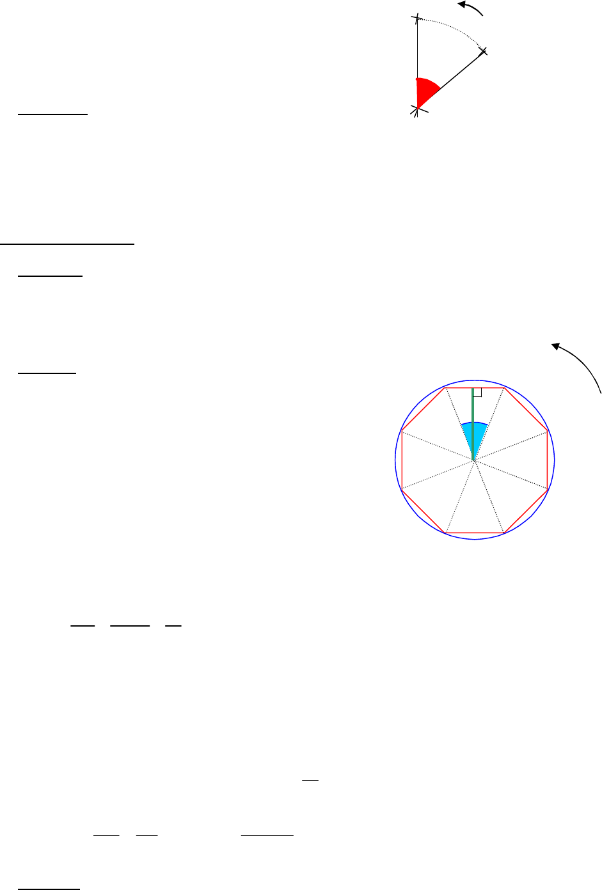

2/2
Donc l€image de O est O lui-mƒme.
b) Propri•t•s :
L€image d€un segment par une rotation est un segment de mƒme longueur.
L€image d€un angle par une rotation est un angle de mƒme mesure.
Une rotation conserve les longueurs et les angles.
Une rotation conserve l’alignement.
3) Polygones r•guliers :
a) D•finition :
Un polygone r•gulier est un polygone dont les c…t•s ont la mƒme longueur et les angles
ont la mƒme mesure.
b) Exemple :
ABCDEFGH est un octogone r•gulier
inscrit dans un cercle de centre O
et tel que la distance de O ‚ (AB) est 2 cm,
soit d(O,(AB)) = 2 cm.
Calculer la mesure de l€angle
.
Quelle est l€image de l€octogone par
la rotation de centre O et d€angle 90„
dans le sens direct ?
Calculer le rayon du cercle (C ) circonscrit ‚ l€octogone.
=
360
8
=
90 4
4 2
=
90
2
= 45„
L’image de A est donc C, car
= 45„ 2 = 90„.
De mƒme l€image de B est D, l€image de C est E, les images de D, E, F, G et H sont
respectivement F, G, H, A et B.
Finalement, l’image de l’octogone ABCDEFGH est ABCDEFGH lui-m…me.
On construit la hauteur [OH] du triangle OAB. Comme OAB est isoc†le en O, (OH) est aussi
la bissectrice de l€angle
. Donc
=
45
2
= 22,5„.
Dans le triangle AOH rectangle en H,
OH 2
5,22cos , donc 2,2
5,22cos
2
OA . OA 2,2 cm.
c) Propri•t• :
Un polygone r•gulier est inscrit dans un cercle de centre O.
L€image d€un polygone r•gulier ABC‡. inscrit dans un cercle de centre O, par une rotation de
centre O et qui transforme A en B est le polygone lui-mƒme.
O
O
A
B
C
D
E
F
G
H
(C )
+
H